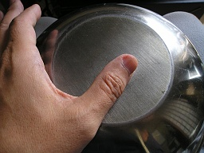
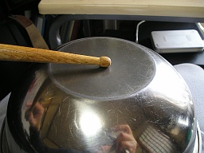
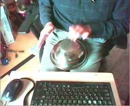
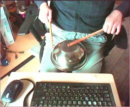
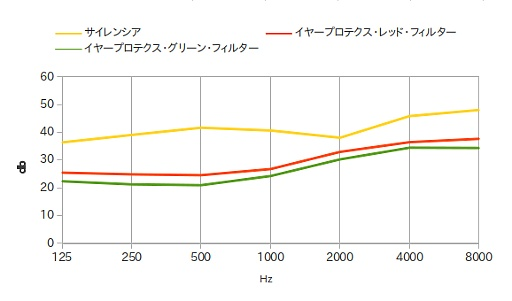
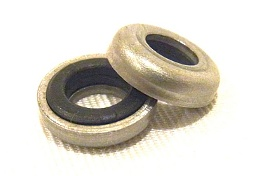
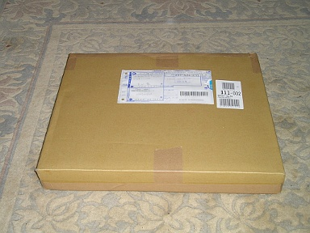
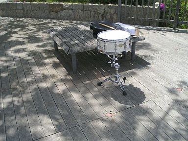

2012 年
04 月 05 日 ( 木 )
最近本が読めなくて、それだけじゃなくてテレビも15分以上見るのは苦痛で、まんがですら読めないような健康状態だったのですが、ちょっと落ち着いてやっと読めました。Picasa でですけど ( Picasa の方では最初の話から最新話までいっきに読めます )。
実際のアマチュアバンドでは、というか自分がいたアマチュアバンドでは、作中のような経験はまったくないのですが ( 音楽を仕事にしようとしていた人達、しようとしている人達のことまではわかりません )、作中にときおり出てくる言葉に反応してしまって、いろいろ思い出したりしてしまいますね。
やっぱりあの曲は自己満足の塊で人様にお聞かせできるような曲じゃなくてステージでやるべきじゃなかったよねとか、演奏できないならステージ前に泥酔するほど酒飲むなとか ( 我ながらしつこいwww )、やりたくない曲は技術的に無理だとか人数足りないから無理とかの言い方でだれもが拒否ってたとか、世間受けしそうだしスキルを研くには役立つのは明かだけどやってて面白くない曲はたしかにあるなぁとか、Bass 曰く実は某堺市のライブハウスでデビュー前のつんく氏にニアミスしてたとか。
なにも自分だけじゃないですよ？
ステージが終ったあとのビールは旨かったし。メンバーの結婚式の二次会で演奏したのも、そこそこよい経験だったかなぁ、とか。ヘタクソな自分のドラムを聴いた同じハコでやってたヘビメタのバンドからサポートを頼まれるという貴重な経験をしたとか。結局 BPM の大きさが要求されるヘビメタは叩けないので断ったとか。
で、漫画の感想ですが、おもしろいです。
音楽をやったことがなくても楽しめます。音楽の経験があると突っ込みでいそがしくなって楽しめないかもと危惧していましたが、まったくそんなことはありません。普通にまんがとして楽しめます。
おそらくステージがクライマックスになるのでしょうけど、楽しみです。
04 月 06 日 ( 金 )
天気はいまいちでしたが、ちょっと写真を撮ってきました。


そういえば国立民俗学博物館に YAMAHA SG-2000 だとか、Gibson ES-335 だとか黒の Les Paul Custom、Fender Stratocaster などが普通に展示されていました。鳴らすことができる状態だったのかは不明です※1。現役のモデルが博物館に展示されているのが不思議でした。SG-2000 なんて、まだ知人が使ってますし。自分は Greco ですが黒の Les Paul Custom ( EG-500J ) を昔に使っていたので懐しかったり。
あとチャルメラやそれ系統の民族楽器の笛類のリードが、オーボエとかのリードとそっくりなのがおもしろかったです。
打楽器は民族毎にかなりのバリエーションが展示されていました。ちょっと鳴らしたかったのですが、展示物なので当然手を触れることができませんでした。
ガムランだけは例外で丁寧に扱うことを条件に音を鳴らすことができました。展示されていたガムランは、なにやらスケールっぽい音程が振られていたので、軽くアドリブで音楽らしい音を鳴らしてみたり ※2。
ですが北〇鮮の監視員のごとく係りの女性がそろりと近寄ってきて遠目に監視しているのがなんかイヤーンでした。だまって監視しないで何か声を一声かけて ＞＜
ちなみにドラムセットは展示されていませんでしたよ！！
楽器だけの博物館があったらおもしろいかもと思いました。もちろん民族楽器も含めてです。きっと膨大な量の楽器が集まると思いますよ。ワクワクしますよね。たとえばキック用のペダルだけで何千種類も展示されてるとかwww
※1 傷んでいてダメかも、という意味です。博物館に展示されているということは、それは資料として取り扱われていても、絶対に楽器として取り扱われてはいないはずです。たとえアマチュアであっても我々楽器弾きが日常的にそうするように、楽器として音がいつでも出せるようにメンテナンスするということは決してされてないはずです。
※2 同行していた人がガムラン演奏できるんですか！？とかおどろいていましたが、んなことはありません。音程を確認して、低音域、高音域、低音域、中音域の順番に適当に音を拾ってリズムを入れてループさせただけです。授業で木琴が叩ける小学生でもできます。誰でもできます。
04 月 07 日 ( 土 )
これまでカナル・タイプ ※1 のヘッドホンは避けてきました。かなり以前は、かさばらず携帯に便利なので使っていたのですが、どうしても耳からポロポロと外れてしまい、それがストレスだったんです。
それでとうとうカナル・タイプを使うのを止めてしまいました。それ以来、携帯プレーヤーでも小型とはいえ普通の耳に被せるタイプのヘッドホンに切替えました。
※1 インナー・イヤー・タイプとも呼ばれるのは、みなさんご存じのとおりです。イヤホンと呼ばれることも多いですね。
ところがですね、今日、たまたまプロのミュージシャンの人達も使っているイヤー・モニターを見ていたんです。すると安価な、とはいっても数万円はするのですが、イヤー・モニターでカナル・タイプのヘッドホンに似た形状のものがあるわけなんです。
その装着方法がユニークで「なるほど、これなら外れにくそう」という装着方法が写真で説明されていたのです。
さっそく真似てみました。

なんと 5 分もせずにポロリと外れていたヘッドホンの外れる気配がありません。
なんだか、うまくいってそうなので、しばらくこれで試したいと思います。
．．．．．
．．．．．
．．．．．
そっか。
これまで重力に負けて外れてたんだ。
．．．．．
．．．．．
．．．．．
というか、よくよく考えたら携帯プレーヤーは、もう持ってないんだった。
気がついたときには、もうそれは使えない．．．．．
04 月 08 日 ( 日 )
この人の作品ってなんとなく昭和あたりというか同世代のテイストがしてるんですよ。昭和の頃の映画や小説っぽいフレーバーがあって、今どきの子たちにうけるかどうかはわからないのですが、たぶん僕らの世代だと、このテイストを理解できる。
ひょっとしてお年が近いかもと思っていたら、やっぱりほぼ同世代でした。私より少し下、私の女房となら女房が高 3 のときに新入生だったと言えるくらいに歳が近い。
僕も小学校に入るか入らないかのころ万国博覧会には行ってたりするのですが、万博の思い出といえば長い時間並んで古河パビリオンに入れなかったとか、やはり長い時間並んでアメリカ館に入れなかったとか、なにかに入れなかった記憶ばかりです。
う゛ぇ、これ欲しい．．．．．
高価ぇ。
04 月 09 日 ( 月 )
リチャード・クレイジーマンさんが blog にシンバル動画を貼られていたので対抗して！！というわけではありませんがwww
自分はもう少し落ち着いた音が好きなのですが、これはこれで。しかし Zildjian はラインナップが多すぎてわけがわからんですな。
変った楽器シリーズ Part 2www
Hang Drum という楽器らしいです。なんでも欲しい人が世界中から殺到していてなかなか購入できないとか。この人は足にジングルをつけて鳴らしたり、片手で他のパーカッションを鳴らしたり、いろいろやってますね。
この演奏がすごいので、まぁ見てみてください。
こちらは形状が似ているけれども、また違う Helo Drum。ペダルがずらりと並んでいることから、楽器屋さんの打楽器コーナーでしょうか。
04 月 10 日 ( 火 )
諸君！！新しい民族楽器を入手したぞ！！しかも打楽器だ！！まずは音を聴いてくれたまえ！！演奏技術のことは気にするな！！それと Web カメラで録音したので音がアレだったり、リミッターが自動でかかってるのも気にするな！！
こっちは高音がきついので音量注意だ。
この楽器の演奏の仕方だが、手で叩く方法とバチで叩く方法の二種類がある。さっきの一つ目の音がこの楽器を手で叩いている音だ。二つ目がバチを買うお金がなかったのでドラムスティックで叩いた音だ。
まず手で叩く方法をみてみよう。
楽器の側面を叩くことで、豊かな低音を得ることができる。

楽器の上面を叩く方法には三つの方法がある。一つ目は親指で叩く方法だ。

これだと、この楽器専用のスタンドがなくても片手で演奏することができる。持ち運ぶ機材が多くスタンドを持ち運ぶのが困難であったり、この楽器を槍ヶ岳の山頂に持っていって演奏するような場合に便利だ。
もう一つは普通のパーカッション同様に指の腹で鳴らす方法だ。この場合、指が楽器に触れる時間を短くすることで、豊かなサスティーンを得ることができる。

もう少し高音が欲しいときは爪で楽器を鳴らすとよい。

この楽器がおもしろいのは手で演奏する時と、バチを使って演奏する時とでまったく楽器の特性が変ってしまうことだ。
手で演奏する時に低音を出そうとすると側面を叩く必要があった。しかしバチを使って演奏する時に低音を出す時には、手の場合とは逆に上面を叩く必要がある。

バチで側面を叩くと、上面を叩くよりやや落ち着いた音になる。

なおサスティーンであるが、下の写真のやや楽器の中央寄りの黄色いところを叩いたほうが、楽器の端の赤いところを叩くより豊かなサスティーンが得られる傾向にある。

下の写真は私がこの楽器を手で演奏しているところだ。

次の写真は私がこの楽器をドラムスティックで演奏しているところだ。

この楽器は実に多彩なサウンドを得ることができる。
この偉大な楽器 "ボール" を生み出した専業主夫という民族にわたしは敬意を表したい。
まぁ、これは当然ネタなんですが ※1、ボールは半球状なのでそれなりに鳴るんじゃないかとためしてみました。Hapi Drum みたいにトングを入れればスケールも表現できるんじゃなどと妄想しています。グラインダーを持っている人ならやっちゃいそう。100 均でボールなんて手に入るしwww
※1 エイプリールフールネタにとっておけばよかったですかね。でもそうなると 1 年後ですしおすし。
04 月 11 日 ( 水 )
念！！願！！
耳栓を購入しました。しかもハイテクです。しかもシライミュージックさんのクラちゃん営業部長のごあいさつ入りです。プレミアです！！

さて、これまでサイレンシアという耳栓を使っていました。ですが自分が使うにはいくつか欠点がありました。

ひとつはサイレンシアが遮音を目的としていることです。私の求めてるのは遮音ではなく減音です。
もうひとつは、サイレンシアは一度ギュッと押しちぢめて耳孔に突っ込んで、耳孔内で膨らむことで耳孔を塞いで遮音する仕組みになっているのですが、膨らむ時間が速すぎるのですね。耳孔に充分に突っ込む前に耳孔に入らなくなるほど膨らんでしまう。なのでこの点でも自分は困っていたわけです。
シライミュージックさんの blog で VATER Ear Plugs を知って「これほしい！！」となっていたのですが。シライミュージックさんでもすでに売り切れ。メーカーサイトに行ってもそんな商品があるという気配すらなかったのでおそらく廃番。代理店らしきものもまったく見当たらない。
正直がっくり来ていたのですが、突然シライミュージックさんから VATER Ear Plugs と同機能の WestStar earprotex ERX-MS というのがでたよ！！との報が！！
目先の現金がなかったので、今になってやっと購！！入！！
説明書にあった周波数毎の減音性能のうち平均値をグラフにしてみました。横軸が等幅でないことに気をつけてください。

高音がより減音される傾向がみてとれますね。内耳の神経束は高周波数の音によりやせ細りやすいといいますから、日常会話には困らないようにすることと耳への優しさを、うまく両立してるんですね。
私はときおり音が苦痛になることがある疾患に悩まされてもいるので ※1 今は日常生活で試用中です。スタジオで試す機会があるのかどうかはちょっと現時点で不明です。ポプラちゃんの話もポシャっちゃいましたし。
※1 日常的な音量でもきついんです。常時ではないんですけどね。なお内耳系の疾患ではありません。でもわたしと同疾患の人は同じ悩みがあるはず。
ついでにサイレンシアの遮音効果もプロットしてみたところ、おもしろい結果がでたので公開します ※2 ※3。

高い周波数から低い周波数に向けて見ていきます。
イヤープロテクスのグラフは 2000Hz あたりを境に低音域はグンと遮音能力が下がっています。つまりイヤープロテクスは概ね 1000Hz 以下はそこそこ音を通す設計になっています。
ところがサイレンシアは 4000Hz から 2000Hz かけて遮音性能を低下させるとみせかけて、500Hz まではかなり高い遮音性能を維持してます。
500Hz より小さな周波数の遮音性能も高レベルで維持されており、実質的に 2000Hz 以下の周波数は 2000Hz での遮音性能を維持するようになっています。
サイレンシアはイヤープロテクスと比較して全体的に遮音性が高いだけでなく、2000Hz 以下の周波数でも高い遮音性を維持し、低い周波数から高い周波数にかけての高い遮音性を持つように作られています。つまりサイレンシアは文字通り静かな環境が欲しい時につかう耳栓だといえます。
今述べたように、サイレンシアは高周波数音を相対的に遮音しながらも、全周波数にわたって大きく遮音しています。そのため結果的に音にクリアさが失われてしまうんですね。つまりイヤープロテクスと比較してあまり音楽の現場向きではないと言えます。
なので音楽の現場に持っていくならイヤープロテクスがよいということになります。
人様のライブを観に行くときもイヤープロテクスはいいんじゃないでしょうか。'90 年代くらいから鼓膜がディストーションを起こすくらいの大音量で PA をならす大音量コンテスt …いや、ライブが定着してますし。
その Rock 系の大音量コンテスt …げふんげふん、ライブについてのネタは、また後日に書こうかと思います。
※2 イヤープロテクスのデータにもサイレンシアのデータにも標準偏差値のデータがあわせて記載されています。サンプリングしてデータをとったときに、同じ製品であってもこれくらいの標準偏差は生じるというものなんでしょうね。
- ※3 グラフ・データ・ダウンロード
04 月 12 日 ( 木 )
P 社のドラムについて今日 twitter で知ったことのメモ。
さらにネットで調べたところ、いろんなドラム・テックさん曰くこれは P 社に限らないことで、すべてのメーカーのドラムに言えることらしい。ドラムという楽器の構造による宿命みたいなもの。
- 2012. 4.11 PM 05:31
ShiraiMusic -
はじめてP社のスネアを買った時に、なんでこんなにピッチ下がるんだ？と。自分が下手だからピッチが下がるのかと思ったら、プロドラマーのテンションキーパーの使用率の高さを見て、あれ？これ必須アイテムじゃんと。テンションキーパーがシェーンモデルに付属した時に、さすが！と思いましたよ。 [TweetDeck]
- 2012. 4.11 PM 07:16
mitsuguoyama -
@ShiraiMusic 質問させてください。それは使っているうちにピッチが自然に下がってくるというっことですか？下げたくなるということではなくて？ [TwitVim]
- 2012. 4.11 PM 07:18
ShiraiMusic -
@mitsuguoyama リムショットしてフープが沈んでテンションボルトが回って、チューニングが下がるという事です。
- 2012. 4.11 PM 07:20
mitsuguoyama -
@ShiraiMusic ということはP社のスネアの場合はオープンリムやクローズドリムをそこそこ使ったあとは、ピッチの確認が必須であると。 [TwitVim]
- 2012. 4.11 PM 07:22
ShiraiMusic -
@mitsuguoyama 確認とかそういうレベルでなくだるだるにｗ [TweetDeck]
- 2012. 4.11 PM 07:23
mitsuguoyama -
@ShiraiMusic だるだるですかwww [TwitVim]
- 2012. 4.11 PM 07:28
ShiraiMusic -
テンションキーパー単品販売はこちらですよ。http://tinyurl.com/6tnsw9r [TweetDeck]
- 2012. 4.11 PM 07:31
mitsuguoyama -
RT @ShiraiMusic: テンションキーパー単品販売はこちらですよ。http://tinyurl.com/6tnsw9r [web]
- 2012. 4.12 AM 07:46
ShiraiMusic -
感想聞かせてください！ RT @Hiroki_DBB: 明後日のライヴへ向けてスネアのメンテ終了！シライミュージックオリジナルのドラムグリスの効力や如何に(゜ロ゜)とりあえずP社のスネアなのでテンションキーパーは必須です(´Д｀) [TweetDeck]
- 2012. 4.12 AM 08:08
mitsuguoyama -
やっぱりテンションキーパーは必須なのか。 [TwitVim]
04 月 14 日 ( 土 )
ギターのエフェクターにディストーションというものがあります。音を歪ませるエフェクターです。楽器を弾いてなくてもご存じかもしれません。
昔々ギター用のエフェクターなどというものは存在しませんでした ※1。それにもかかわらずディストーション・サウンドは存在していました。
どうやってギタリスト達がディストーション・サウンドを作っていたのかというと、これもみなさんご存じかもしれませんが、アンプのスピーカー・ユニットが出力に耐えられずに歪むまで、アンプのボリュームを上げてディストーション・サウンドを作っていたわけです。
Rock という音楽の音量がでかいのは、もともとはギターのディストーション・サウンドが欲しかったからです。
私が Live の音量を意識したのは Jeff Beck が Stanley Clarke と来日したときでした。Live は Darkness / Star Cycle で始まったかと記憶しているのですが、背後でビリビリと何かが鳴ってるわけです。
最初は B 席の最後方で聴こえるこのビリビリ音がなんなのかわからなかったのですが、そのうちわかりました。普通ホールには非常口の誘導灯がありますよね。あれがシンセサイザーの音で震えてビリビリと音をだしているわけです。
ホールの備品がビリビリと音をだしていたのですから音量はそれなりにあったはずなのですが、それを轟音とは感じませんでした。Jeff のフレーズも聞き取れますし Stanley のベンベンしたスラッピングも、前の席のおネェちゃんたちの「ベックゥ〜♥」などという黄色い声も聴こえてましたからw ※2
Rainbow のときも PA 真っ正面という大音量絨毯爆撃領域でありながら、全パートの音は普通に聞き取れてました。
ですが結婚前の女房につきあって行った爆風 SLUMP の Live はいろいろ違っていました。
自分の Rock の Live のイメージというと、ステージ上にギター・アンプとベース・アンプが置いてあって、ステージ脇に PA スピーカーが鎮座して、そこからドラムとキーボード、ボーカルの音をだすというセッティングです。ところが爆風 SLUMP の Live のときはまったく違いました。
購入できた座席はホールの中央付近の右端でした。
席がとれたときは、あぁステージからちょっと遠いかな、と思っていたのですが、当日実際に席につくとなぜか目の前に PA が山のように積まれています。おどろいてホールを見渡すとステージ脇だけでなく、数カ所に PA の山がつくられています。
そして轟音とともに Live が始まりました。ええ。轟音です。まともに曲が聞き取れないくらい轟音です。何を演奏しているのかわからないくらい轟音です。
途中でふと気がついたのですが、ギターだけでなく PA から聴こえるサンプラザ中野さんの声までが歪んでいます。このころには PA の性能はすでに向上しており、出力を上げたからといって PA が歪んでしまうというのは考えにくく、電気的に加工しているのでなければ、歪みはコーン…膜が音量に耐えられないことでおきるわけだから……
まさかと思って耳を指で塞いでみましたよ。
とれましたよ。耳を塞ぐとボーカルの歪みがなくなりましたよ。
鼓膜が受け入れることのできる限界を越えた音量のために、鼓膜でディストーション・サウンドが生まれていたわけですね。こんなのもう音楽じゃないw
先日耳栓のことを書きました。そのときいろいろ調べた際にこんなのを発見してしまいました。そっかぁ。今でも Rock 系の Live は人間の聴覚に障害をおよぼすほどの大音量なんですね。
もう意味のない大音量コンテストはやめた方が、誰もが幸せになると思うのですが、そう思うのはマイノリティでしょうか？w
※1 あるいはギタリストによっては、エフェクターがあるにもかかわらず、それを使わないという選択をしている人もいました。
※2 Jeff Beck の Live ではこういう黄色い声があったんですよ。本当に。噂には聞いてはいたのですがw
04 月 17 日 ( 火 )
今年に入ってからドラム・セットをマリンバやビブラホンのように叩くスタイルが実はいいんじゃないか、と思いつつあったのですが ※1、なんとすでに似たようなコンセプトでプレイしてる人がいました。
※1 各方面からの突っ込みが怖くてこれまで言えませんでした。
この人、日本では知る人ぞ知るドラマーらしく、Ari Hoenig という人なんですが、プレイ中に指や肘でヘッドを押さえてピッチを変えるというすごいことをやってます。曲によっては ( 例えば Autumn Leaves など ) ピッチの大きな変化が聴き取れます。
なんだか Ari Hoenig さんの体の使い方、特に肩から先の使い方、それからスティックのホールドのしかたが独特です。これで故障とかしないのかしらん。
あまりにもプレイがすごいので YouTube で再生リストもつくっちゃいました。
この人の DVD があったら欲しいかも。日本製の DVD Player だとリージョン 1 の DVD は再生できませんからね。
04 月 18 日 ( 水 )
稀有な才能というのはこういうのをいうのでしょうね。いや、個人じゃないからどうなんだろう。いや、まぁ、どちらにせよ本格的。
どういう人たちなんだろう。
04 月 19 日 ( 木 )
テンション・キーパーのメモ。
楽天の写真を引用するのもアレだけど、他にわかりやすい画像がないので。
それとネットでいろいろ検索すると、多くのドラムテックさんが、もし取り付け可能なら Pearl の TNK-10N/10 が確実で良いと書かれている。
- Pearl テンションキーパー TNK-10N/10
-

- Pearl テンションキーパー TL-20
-

- カノウプス レッドロック チューニングボルト用樹脂ナット
-

- TAMA ホールドタイトワッシャー SRW620P
-
これはテンション・キーパーじゃなくてチューニング・ボルトをフープにつけるときに合わせてつけるワッシャーだけど。

04 月 21 日 ( 土 )
今日は公園にでかけました。
自転車に乗って。
背中にスネアをしょって。
いい天気でした。
青空の下で Masters Custom を叩くのはなかなか気分がいいものでした。
野音での Live ってこういう気持ち良さがあるのかもしれませんね。経験ありませんけど。
スネアを叩くといってもストロークの基礎的なトレーニングをしていただけなのですが、まぁ、人が集まる集まる。主に子供がwww
実は Masters Custom の音をちゃんと出すのは今日が初めてだったりします。家の中で鳴らせませんしねwww
04 月 23 日 ( 月 )
新曲がきてた。
やばい。やばいよ。曲もやばいけど、ハイハット、シンバル、スネアの音がやばい。タムとバスドラの音もやばい。ドラムの音がやばいよ。
ハイハットの踏み具合での音の違いまでレコーディングされてて、むちゃくちゃやばい。今どきのレコーディングでは、こういうセンシティブな音はもうほとんど聞かない。
いやー、やばいわぁ。
もう 1 曲。
こっちの曲は The Beatles の Magical Mystery Tour を初めて聴いたときと同様の衝撃をうけました。
04 月 25 日 ( 水 )
またなんか来た。

なぜそれを組み立てる？

だからなぜセッティングを？

なるほどっ！！

ちなみに、こんな団地の一室で 17 時ごろ叩いてもまったく音量的に問題なし。コーナンで買った発泡ラバーゴムより静かで、ニヤニヤしてしまう。

試しにスネアを取り除いてスタンドに直接 RealFeel を乗せてみた。

こちらの方がうるさい感じ。RealFeel のベースになっている木がカパカパ鳴ってしまう。スネアに乗せた方が静かなのが意外。スネアのヘッドが振動を吸収するためかも。
04 月 28 日 ( 土 )
今日はあまりに天気がいいのでアウトドアにでかけよう！！
そう思い立ってアウトドアにでかけてきました。
やってることは、おもいっきりインドアですけどね。

地味にひたすらストロークの練習をしていると、散歩のおじいさんに声をかけられたですよ。
「おじょうずですな。そうやって叩いていると、やっぱり気持ちいいんでしょうな」
「そうですね。今日は特にいい天気なので気持ちいいですね」
「いや、叩いてるんだから、ストレスとかは解消されるんでしょうな」
「え？地味な練習なので、どちらかというとストレスが解消されるということはないかもです」
どうも私の言っていることが合点がいかないらしく、その人には「叩く＝ストレス発散」という図式があるらしいことが、その人の表情から容易に想像できました。
ドラムを叩いたことがない人のそういった気持ちはわからないでもありませんし、あまり突っ込んで説明してキレられても困るので、話題を天気の話にそらせてごまかしました。
「しかしお上手ですな」
「いえ、そんなことはないですよ。中高生の吹奏楽部の子の方がうまいんじゃないでしょうか」
「いやいや、お上手ですよ。ところでその棒は左右で太さが違うんですか？」
「おおよそ一緒です」
「左右で音を変えるとは、お上手なんですな」
おじいさんはニコニコしておっしゃってましたけど、それ褒めてることになってませんから。わたしは左右の音の粒と音色を一致させようと、ずっと以前から練習してるんですけど orz